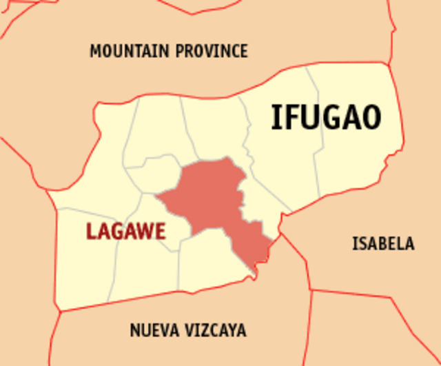

<!DOCTYPE html>
<html>
<meta charset="UTF-8">
<meta http-equiv="X-UA-Compatible" content="IE=edge">
<meta name="viewport" content="width=device-width, initial-scale= 1.0">
<link rel="stylesheet" href="Ifugao.css">
<title>YCordillera</title>  </html>
<header class="header">
  <a href="#" class="logo">YCORDILLERA AK</a>
  <nav class="navbar">
    <a href="Jacob_Website.html">Home</a>
    <a href="Jacob_Websiteabout.html" onclick="return confirm('Info about the website not the creator')" >About </a>
    <a href="Jacob_Websitecontacts.html">Contact</a>
    <button class="button"><a href="WebsiteSignin.html">Sign in</a></button>
    <button class="button"><a href="WebsiteSignup.html">Sign up</a></button>
  </nav>
</header>
<body>
  
  <p class="homedesc1">
    Ifugao, officially the Province of Ifugao (Ilocano: Probinsia ti Ifugao; Tagalog: Lalawigan ng Ifugao), is a 
    landlocked province of the Philippines in the Cordillera Administrative Region in Luzon. Its capital is Lagawe 
    and it borders Benguet to the west, Mountain Province to the north, Isabela to the east, and Nueva Vizcaya to the 
    south.
  </p>
  <p class="homedesc2">
    The term Ifugao is derived from ipugo, which means "earth people", "mortals" or "humans", as distinguished 
    from spirits and deities. It also means "from the hill", as pugo means hill. The term Igorot or Ygolote was the 
    term used by the Spanish for mountain people. The Ifugaos, however, prefer the name Ifugao.
  </p>
</body>
<body>
  
  <p class="homedesc3">What is Ifugao known for?
    The Rice Terraces of the Philippine Cordilleras and Banaue Rice Terraces are the main tourist 
    attractions in the province. These terraces are believed to have been hand-carved into the mountains 2,000 years 
    ago to plant rice. However, recent research by carbon dating suggests that they were built much later.
  </p>
  <p class="homedesc4">
   The culture of Ifugao
   Ifugao culture revolves around rice, which is considered a prestige crop. There is an elaborate and complex 
   array of rice culture feasts inextricably linked with taboos and intricate agricultural rites, from rice cultivation
    to rice consumption.Monogamy is the norm among the Ifugao but some wealthy families practice polygyny. Incest prohibitions 
    extend to first cousins. Marriage to more distant cousin can only be arranged after the payment of livestock penalties. Trial marriages 
    between prospective couples is common.
  </p>
  <p class="homedesc5">
    According to the Ifugao myth of creation, the Ifugao are the direct descendants of Wigan, the god of the Skyworld, whose son and 
    daughter became the first parents of the Ifugao. Legend has it that the god from Skyworld gave the first sacred rice to the Ifugaos.

</body>
<footer>
  jacobivanfranzrandall@gmail.com . All rights Reserved
</footer>